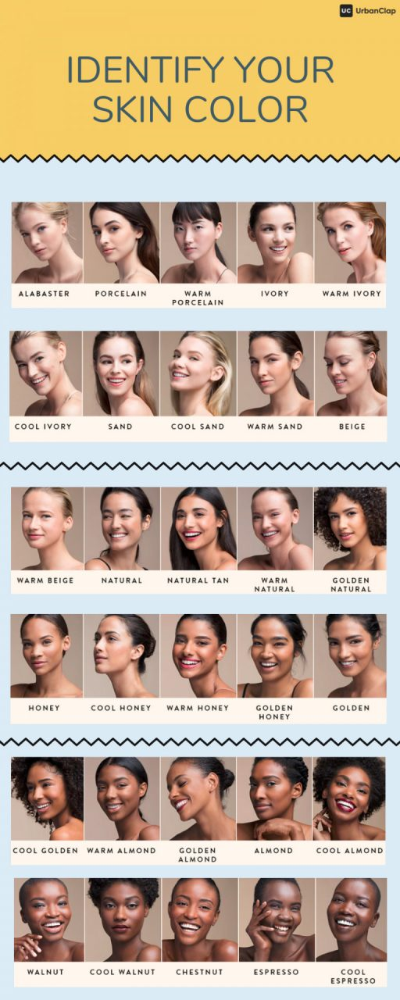

Why am I glowing like a light bulb?
Why does the color of my face and neck look so different from each other?
God, this makeup is making me look so dark!
When I did my makeup everything was fine, but why is it making me look so dull now?
Skin tones are split into three main categories – Light, medium and deep. In the global context, Indians, largely, have medium skin tone irrespective of the region we hail from. Light skin tone typically is reflective of Caucasians while deep is for Africans. Medium skin tone can be further sub-divided into beige, tan, honey and more such colors. Refer to the infographic below and find the skin tone closest to yours.
Skin undertone refers to the color that comes through the skin from underneath its surface. Skin undertones are of three types – warm, neutral and cool. To identify your skin undertone, here are a few tests you can try:
1. The wrist test: Check the color of your veins. If they are purple or blue in color then you are cool. If they are green or olive in color, you are warm. But if you are unable to determine the dominant color, you are neutral.
2. The sun test: If your skin turns red when you are out in the sun, you have cool undertone. Conversely, if you get tanned easily in the sun you have warm undertone.
Once you know skin color and undertone, your search for the right foundation shade narrows down considerably. You will, most likely, by now have a handful of foundations shades to choose from. In such a scenario it’s best to test the shades on your skin and find the perfect match.
Start by shortlisting three shades that seem to be a good match. Then, dab some of each shade as short lines on your jaw line (do keep some space in between each). Don’t just consider your face for making the final decision but also your neck. The foundation you choose should blend seamlessly with both your face and your neck.
Of the three swatches, remove the two that don’t suit you. Now, spread the finalised shade across your jawline, and sweep a cotton bud soaked in makeup remover right in the middle. If you don’t notice any difference between your foundation and bare skin, then that’s the foundation for you. But, if you see a difference between the two, this shade is not for you. Repeat the cycle till you find the shade you are looking for.
DONT FORGET TO CHECK OUR FOUNDATION PAGE